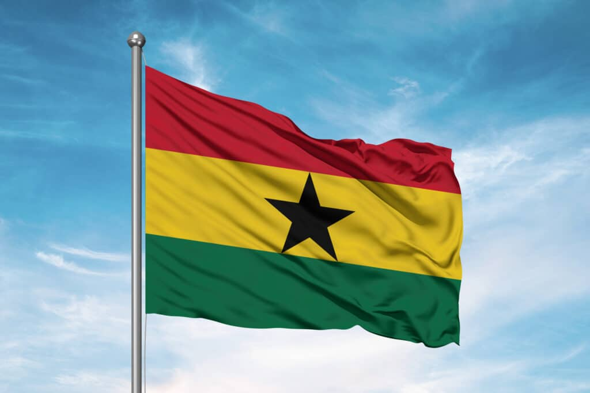

Saviour Agodzo
About Me
Hello! My name is Saviour Agodzo, and I am a passionate web developer from Ghana. I am currently working as a professional teacher and I love teaching. I enjoy playing football with my friends and aside that, I like reading story books in my leisure time.
Winneba, Ghana

Ghana is a country in West Africa, located along the Gulf of Guinea and bordered by Cote d 'Ivoire, Burkina Faso, and Togo. It has multiparty democratic system and is regarded as one of Africa's more stable democracies. In the EIU Democracy Index 2024, Ghana scored 6.24/10, ranking 65th globally. It is famous worldwide for cocoa, being one of the world's leading cocoa-producing countries (approximately 13% of the word cocoa.)